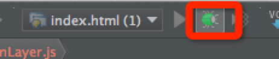

Add Chipmunk Physic Engine to Our Game
Introduction
Cocos2d-html5 can give us the power to create impressive game world. But it lacks some sort of realistic. Though we can do complex compute to make the game world more realistic, but there is an another option which can ease our life. The answer is physic engine.
Physic engine provides gravity, collide detection and physic simulation which can make our game world looks more realistic.
In this tutorial, we will introduce Chipmunk physics engine into our parkour game.
Why Chipmunk Physics?
Why should we choose Chipmunk physic engine? Because it is give us much more power than any other 2D physics engine.
Despite Chipmunk physic engine, there is another option - Box2D.
Box2D is a nice 2D physic engine and it has been existed for a very long time. Many 2d games have been using Box2D for their game physics.
But Chipmunk has it's own advantages. You can go to Chipmunk's website for more information.
Enable Chipmunk Physic in Cocos2d-html5
Preparation
At first, let's enable Chipmunk in Cocos2d-html5.
Open cocos2d.js file, and modify:
chipmunk:false,
to:
chipmunk:true,
Thus, when Cocos2d-html5 finish launching, it will load Chipmunk library automatically.
Next, let's create a new file named globals.js and add two global variables into it.
var g_groundHight = 57;
var g_runnerStartX = 80;
At last, we should tell the framework to load globals.js file when engine launches. Append globals.js path to the end of appFiles array:
appFiles:[
'src/resource.js',
'src/myApp.js',
'src/AnimationLayer.js',
'src/BackgroundLayer.js',
'src/PlayScene.js',
'src/StatusLayer.js',
'src/globals.js'
]
Note: Whenever you add a new file in Cocos2d-html5, you should remember to add it to the appFiles array.
Initialize Chipmunk physic world
In Chipmunk, there is a space object to represent the physic world.
At first, let's add a new member variable named space in PlayScene.js file:
space:null,
In general, one game just needs a space object. The space object can be shared by different layers. We usually put the space initialize code in PlayScene.
Here is the code to setup the physic world:
// init space of chipmunk
initPhysics:function() {
//1. new space object
this.space = new cp.Space();
//2. setup the Gravity
this.space.gravity = cp.v(0, -350);
// 3. set up Walls
var wallBottom = new cp.SegmentShape(this.space.staticBody,
cp.v(0, g_groundHight),// start point
cp.v(4294967295, g_groundHight),// MAX INT:4294967295
0);// thickness of wall
this.space.addStaticShape(wallBottom);
},
The above code is self-explanatory so we can safely leave it out. If you want to know the details of these API, you should refer to Chipmunk's official documentation for more information.
Next, let's define our game's main loop:
update:function (dt) {
// chipmunk step
this.space.step(dt);
}
In the update function, we tell Chipmunk start to simulate physics.
Before we go any further, let's add a minor change to AnimationLayer. Since we will create physic actor in AnimationLayer, so we should modify the constructor of AnimationLayer to pass the space object in.
ctor:function (space) {
this._super();
this.space = space;
this.init();
},
Of course, we should define a weak ref member variable in AnimationLayer and initialize it to null.
Thus our preparation work has been done. let's wrap the end and call these method in onEnter function:
onEnter:function () {
this._super();
this.initPhysics();
this.addChild(new BackgroundLayer());
this.addChild(new AnimationLayer(this.space));
this.addChild(new StatusLayer());
this.scheduleUpdate();
},
Add Physics Component to the Runner Sprite
In the last tutorial, we create the runner by using spritsheet. In this section, we will rewrite the runner by using PhysicsSprite.
The PhysicsSprite is a reusable component which can combine the physic body with a cocos2d sprite.
Here is the code to create the runner with PhysicsSprite:
//1. create PhysicsSprite with a sprite frame name
this.sprite = cc.PhysicsSprite.createWithSpriteFrameName("runner0.png");
var contentSize = this.sprite.getContentSize();
// 2. init the runner physic body
this.body = new cp.Body(1, cp.momentForBox(1, contentSize.width, contentSize.height));
//3. set the position of the runner
this.body.p = cc.p(g_runnerStartX, g_groundHight + contentSize.height / 2);
//4. apply impulse to the body
this.body.applyImpulse(cp.v(150, 0), cp.v(0, 0));//run speed
//5. add the created body to space
this.space.addBody(this.body);
//6. create the shape for the body
this.shape = new cp.BoxShape(this.body, contentSize.width - 14, contentSize.height);
//7. add shape to space
this.space.addShape(this.shape);
//8. set body to the physic sprite
this.sprite.setBody(this.body);
The code and comment are self-explanatory. Add these code in AnimationLayer's init method.
Debug and Test
Congratulations. You have done all the bolts and nuts. You can just press the debug button within Webstorm.

Now you can see the runner run pass through the screen.
Summary
In this tutorial, we have show you how to setup Chipmunk physic world, how to setup the physic world boundary, how to create a rigid body and the associated shape. we also add physics to sprite to make it act more realistic. You can grab the entire source code from here.
Where to go from here
In the next tutorial, we will introduce the camera movement into the game. And we will also replace the background image with tiledMap. More importantly we will make the background infinite loop displayed in the game. Keep tuning with the next tutorial.